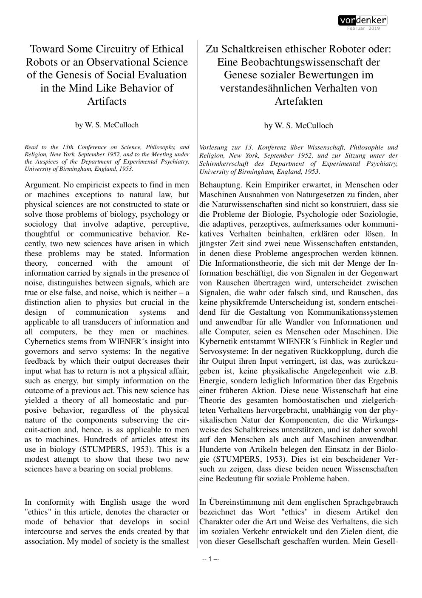
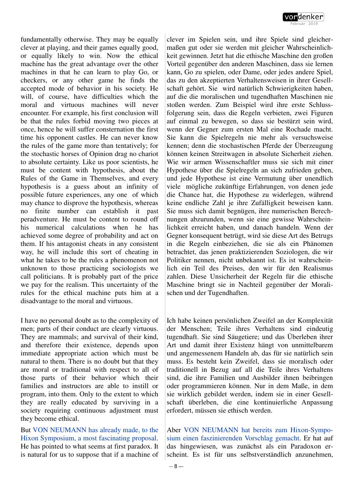

Free, and learning
Not told the rules, not built to obey them. It plays, errs, remembers what led to what, and induces the rules from the society it lives in.
Acta Biotheoretica · Vol. XI · 1956
No empiricist expects to find in men or machines exceptions to natural law. The question is whether a machine can acquire an ethic — not by being programmed with the rules, nor by being built so it cannot break them, but by playing, losing, and learning what the rules are.
Read the plateThe thesis
McCulloch's model of society is the smallest that can share an end: two associates. Three, as von Neumann's game theory shows, permits any two to combine against the third. The question is not whether machines can be good, but what kind of machine can learn the rules of a game from the game itself.
He distinguishes three machines. The moral machine has the rules programmed into it. The virtuous machine is built so that it cannot break them — like the Noble Savage. The ethical machine is free: it is told neither what it ought to do nor made unable to do otherwise. It learns by induction, from success and failure, what the accepted mode of behaviour is.
The three machines
Not told the rules, not built to obey them. It plays, errs, remembers what led to what, and induces the rules from the society it lives in.
The rules are installed in advance. It would have been free had it not been programmed. When the rules change, it keeps the old ones.
Its components are wired so it can only play by the rules. At best naturally virtuous, like the Noble Savage — and helpless when the game changes.
Laboratory · the rule change
The three machines play the same game. At the dashed line, the rules change. The moral machine keeps its program; the virtuous machine cannot break its built-in rule; the ethical machine has to learn again. Move the change point and the desire to play.
Success is the fraction of legal, winning play. The ethical curve is fastest when the desire to play is high enough to keep exploring — but not so high that winning is forgotten.
The circuit
The ethical machine is not a mysterious addition to computation. It is a Turing machine — finite parts, finite states, a tape — coupled to a memory of past games and to the feedback of success and failure. Its trials begin almost at random; it errs, then avoids the error most of the time. Biologists used to call that “associative hysteresis.”
What makes it ethical is the shape of its two feedbacks: a desire to play and a desire to win. If it only wants to win, it stops exploring. If it only wants to play, it never learns what winning is. The ethic is the balance.
The definition. Two feedbacks, not a soul. The machine's conduct becomes social because it must find an opponent, abide by the rules it infers, and try to win.
Induction. The ethical machine's rules are hypotheses, revised by experience. “Like us poor scientists, he must be content with hypothesis.”
The value anomaly returns. Three incompatible ends can be connected so that dominance is circular. A six-neuron system can already have a heterarchy of values.
The voice
“No empiricist expects to find in men or machines exceptions to natural law, but physical sciences are not constructed to state or solve those problems of biology, psychology or sociology that involve adaptive, perceptive, thoughtful or communicative behavior.”
“Ethics … denotes the character or mode of behavior that develops in social intercourse and serves the ends created by that association.”
“The ethical machine has the great advantage … in that he can learn to play Go, or checkers, or any other game he finds the accepted mode of behavior in his society.”
“Like us poor scientists, he must be content with hypothesis about the Rules of the Game in Themselves, and every hypothesis is a guess about an infinity of possible future experiences.”
“A TURING machine with only two feedbacks determined, a desire to play and a desire to win.”
The paper itself
click to enlarge


Why it matters
This is one of the earliest clear statements of the alignment problem, and it is unusually free of both optimism and despair. A machine that learns the rules by induction will be uncertain about them; it will make mistakes; it will sometimes infer a local convention as a universal law. That is the price of freedom.
The moral machine is safer but brittle. The virtuous machine is safest and utterly unable to adapt. The ethical machine is the only one that can join a changing society — and the only one that can be wrong in a human way.